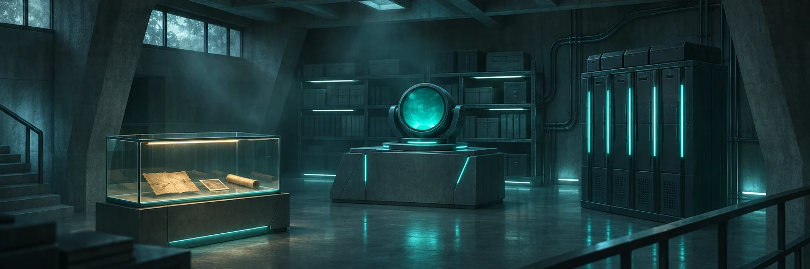

Письмо
без адреса
В 2086 году музей готовится рассказать историю Лиды Ветровой. Единственное письмо, на котором основана эта история, пропало из каталога сто лет назад.
19862086
В 2086 году музей готовится рассказать историю Лиды Ветровой. Единственное письмо, на котором основана эта история, пропало из каталога сто лет назад.
19862086
Дело № 17


Проведи границу в обе стороны, чтобы сверить два снимка.
Осматривай предметы в комнате, чтобы пополнить инвентарь.